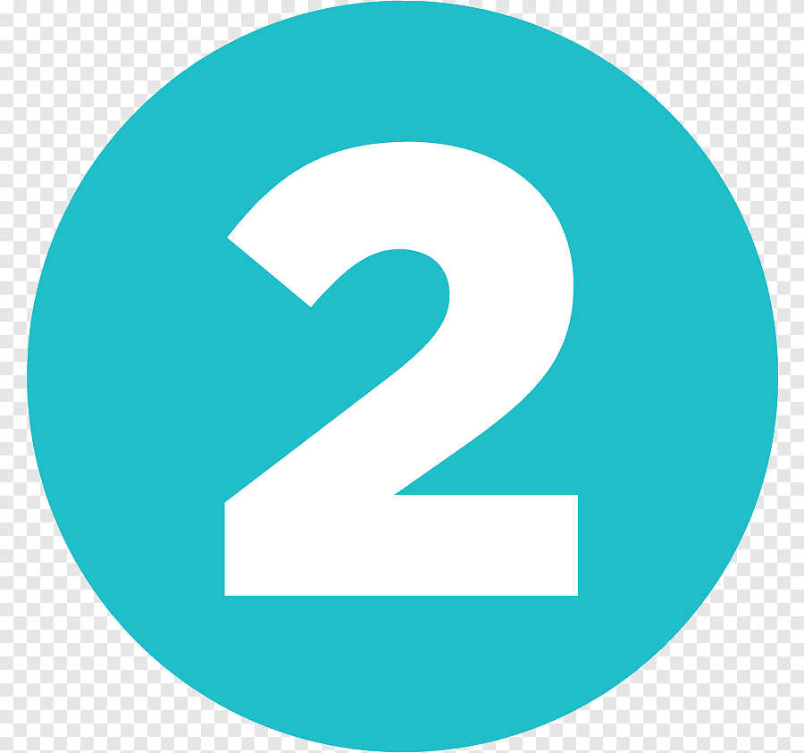

Роль СПО в медицине и здравоохранении, примеры и электронные медицинские записи.
СПО находит применение в различных аспектах медицины, от управления данными пациентов до научных исследований. Это позволяет улучшить качество медицинских услуг и сделать их более доступными.
1. Экономическая эффективность: Снижение затрат на программное обеспечение за счет использования бесплатных решений.
2. Гибкость: Возможность адаптации СПО под специфические потребности медицинских учреждений.
3. Безопасность: Открытый исходный код позволяет оперативно выявлять и исправлять уязвимости.
4. Сообщество: Активное сообщество разработчиков и пользователей обеспечивает постоянное улучшение и поддержку СПО.

OpenEMR – это комплексная система управления медицинскими данными, которая включает ведение электронных медицинских записей (ЭМЗ), управление назначениями, выставление счетов и многие другие функции. Она широко используется в различных медицинских учреждениях по всему миру..
GNU Health – это система управления здравоохранением, включающая модули для управления пациентами, эпидемиологического мониторинга и телемедицины. Она используется в больницах и клиниках для улучшения качества медицинской помощи.
VistA (Veterans Health Information Systems and Technology Architecture) – это система медицинской информации, разработанная Министерством по делам ветеранов США. Она включает модули для управления медицинскими записями, лабораторными исследованиями и фармацевтическими данными, и используется в больницах ветеранов по всей стране.
Важность ЭМЗ в современном здравоохранении: ЭМЗ позволяют улучшить координацию медицинской помощи, сократить ошибки в медицинской документации, повысить доступность информации для врачей и пациентов, а также улучшить общую эффективность медицинских учреждений.
Роль СПО в развитии и внедрении ЭМЗ: СПО предоставляет гибкие и настраиваемые решения для создания систем ЭМЗ, позволяя медицинским учреждениям интегрировать их с другими системами и улучшать их функциональность.
 OpenMRS: Открытая система для ведения медицинских записей, широко используемая в
развивающихся странах. Она помогает улучшить качество медицинской помощи в регионах с ограниченными ресурсами.
OpenMRS: Открытая система для ведения медицинских записей, широко используемая в
развивающихся странах. Она помогает улучшить качество медицинской помощи в регионах с ограниченными ресурсами.
 OSCAR EMR: Канадская система для управления медицинскими записями, используемая в различных клиниках и больницах. Она обеспечивает эффективное управление пациентами и улучшение медицинских услуг.
 OpenEHR: Международный стандарт для создания и обмена медицинскими записями на основе
открытых данных. Он способствует улучшению совместимости и обмена информацией между медицинскими учреждениями.
OpenEHR: Международный стандарт для создания и обмена медицинскими записями на основе
открытых данных. Он способствует улучшению совместимости и обмена информацией между медицинскими учреждениями.
Extra space for a call to action inside the footer that could help re-engage users.